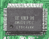

|
|
| 当前位置：电脑报电子版 > 1999 年 > 49 期 > 硬件周刊 > 显示卡的选料与设计 |
| 《 显示卡的选料与设计 》 |
| 很多显卡玩家在讨论显示卡性能如何的时候，也经常谈到显示卡的设计和选料，这是很正常的事情。如果说前几年名牌显示卡厂商之间的竞争在于显示卡性能的优劣，那么如今却变成了设计和选料的竞争了。 为什么呢？大家都知道，如今的nVIDIA和S3的公板驱动程序开发得十分成熟完善。任何一个显卡加工厂商要想再通过修改公板驱动程序来提高显示卡的性能，似乎已经是不可能的事情了。可以说显示卡驱动程序就是公板的最好程序，虽然有厂商称自己的驱动程序多么完美，可是芯片就是那样的东西，到底能如何，你自己试一试就明白了。 一、显示卡的选料 1PCB（印刷电路板）：当我们拿起一块显示卡的时候，第一眼看到的当然就是PCB了，区分PCB的好坏，首先从颜色上就能够看出来，墨绿色的是比较好的（环保，哈哈）。看看欧美的名牌显示卡，你就会明白，台湾的厂商比较喜欢黄颜色的。而那些质量不佳的显示卡往往使用的是那种绿得很不自然或者颜色怪异的PCB（技嘉和ELSA除外）。同时PCB还分为4层板和6层板，6层板会有更好的电气性能以及抗电磁的能力，同时更方便显示卡的布线，具体就需要你自己去细看了。2金手指插槽：显示卡的金手指位置（如图1）也很重要，好的金手指部分颜色呈金色发暗，侧面看具有一定厚度，而且边缘进行了打磨或者切割，不会对AGP插槽造成损伤（AGP槽被显示卡损伤的事情在装机商那里很常见的），插在AGP槽上，应该可以让显示卡拉起整个主板来，这样的金手指才能够保证显示卡更长的寿命。 3电容：钽电容（也经常称为贴片电容）是电容中比较好的了，它大多会出现在同样使用最好PCB的欧美以及台湾的高品质显示卡上，一方面它最大程度地保证了显示卡的工作稳定性，具有最好的耐高温能力，显示卡各方面品质都会很好，显卡的布局更加规范和合理，负面的影响就是使用它的显示卡往往要贵很多。铝电容比钽电容低一个档次，但是也很不错，许多大规模的OEM厂商喜欢使用，成本相对而言低一些，但也能够提供很好的品质。电解电容（如图2）是比较差的电容了，千元以上的中高档显示卡上不应该再看到电解电容，主要是其稳定性和其它方面都相对很差，最明显的就是使用滤波电容的显示卡在高分辨率的大屏幕（19英寸以上）显示器上便会原形毕露，在1280×1024以上的高分辨率下，画面很明显出现模糊现象，同时也很难保证显示卡以更高的频率稳定工作。 4其它元件：显卡BIOS是必需的，常见的FLSAH BIOS都是图3那样的小方块，而EPROM的BIOS多为长条的那种（我手头的显示卡已经没有那种BIOS的了，只好从主板的照片上弄下来一张图片，如图4），通过更新显示卡的BIOS，你可以直接清理掉很多显示卡硬件上的BUG。显卡风扇对超频很重要，总之超频成功率高、厚度薄、噪音小的风扇就是好风扇。其它的诸如显卡晶振、板上集成块什么的，就没有什么必要再去了解了。 二、显存 目前而言它确实很重要，尤其是想对显示卡进行超频的玩家，所以把显存从显示卡的用料中挑出来单独介绍。1显存的分类：显存主要有SDRAM、SGRAM、DDR（DOUBLE DATA RATE）RAM（非主流的显存就不再介绍了）。DDR RAM是SDRAM/SGRAM的一个扩展，提供双倍数据传输速率。它的外观和SDRAM应该是一样的。 2SDRAM的显存：由于目前主流的显示卡全都是16M/32M显存的，显存的规格还有一个具体的分类。16M的128bit的显存，主要的应用范围是TNT/TNT2的16M版本。还有就是Voodoo3的显存了，它们基本上用的都是2M Byte的16bit总线的颗粒，8片组成16M形成128bit显存总线。具体识别方法见图5，这是Voodoo3使用的显存。HY57是厂商的品牌和编号，V是3.3V显存电压，后面的16就是指的单片容量是16M bit（8M bit = 1M Byte），单片容量就是2M，再后面16指的就是单片内存的总线宽度为16 bit，TC－6我想大家都知道，这是显存的速度，为6ns（纳秒）。最让人糊涂的是3个版本的32M SDRAM显存，TNT2 M64和Savage4的显存总线是64bit，所以使用的显存就是4片8M单片16bit的显存，组成32M的64 bit总线，识别方法同上。而像ATI Rage Fury和Permedia3（图6就是耕宇Permedia3上的显存）以及OXYGEN VX1需要128 bit总线，它们使用的是4片8M单片32 bit的显存，组成32M的128 bit总线，成本要高很多。像TNT2 Ultra和GeForce 256（图7是GeForce 256使用的高速显存）使用了和16M版本的TNT2一样的16片显存，怎么组成128 bit呢？看看制作方法，原来正反面，每面8片进行对称同焊脚处理的，所以也是128bit。那么GeForce 256是否可以通过16片显存来组成256 bit总线？可以，可是PCB需要有多大的面积才能够放下？ 3SGRAM的显存：由于SGRAM（见图8）的成本较高，加上主流显示卡芯片很少对SGRAM进行优化，所以使用越来越少了，目前的家用显示卡只有Matrox的GX00系列全部使用SGRAM，其它如华硕和ELSA以及丽台的部分显示卡在使用SGRAM，性能并没有什么优势。至于SGRAM的具体规格，基本上大家都是在用4M单片的32bit的，具体的就不再多说了，因为你所能见到使用SGRAM的显示卡，也就是上面提到的那么几块。 4显存的品质：显存的质量和品牌同样很重要，作为高速显存，从5ns到6ns其实是同批生产的东西，同一条流水线出来，品质好的就打成5ns，差的打成6ns，但是显存的品牌很重要，比较好的是SEC（三星）、HY（现代）以及台湾茂夕等等，它们的6ns产品的超频能力要比某些品牌的5ns的都要好很多。最好的显存是日本产的，如东芝、NEC的，大都只出现在专业显示卡上。而那些没有品牌，使用什么IP、USA之类的无产地品牌的显存的显示卡，你可要小心了。显存是显示卡成本的一个重要组成，也是决定速度和频率的重要因素。 三、显示卡的设计 显示卡的设计原本是很重要的事情，可是如今遇到了和显卡驱动同样的问题：公板设计。你可以自己去设计显示卡，但是除了研发经费的提高以外，更可怕的事情就是性能可能还不如公板设计的显示卡。例子很简单，销量最好、性能最佳的TNT2 Ultra都是一模一样的公板设计，而这些厂商的GeForce 256产品自然也继续跟随公板。那些原非公板设计TNT2的厂商，这回也聪明地在GeForce 256上用上了公板（创新和华硕的GeForce 256的蛇行线都是完全一样的（如图9、10）。在设计方面，板上元件的使用，显示卡的布线情况都是很重要的，每条到芯片的数据线（又称为蛇行线），都要做到长短一致，保证数据的统一和准确。和显示卡的用料相结合，使用面积更大的PCB板，会让布线更加合理。显存在16片的时候，再大的PCB板也会很难制作的，于是，制造难度更大的双面贴片PCB工艺出现。最常见的就是TNT2 Ultra和GeForce256的公板设计，这样虽然给制作带来了难度，但是设计上可以更加合理，容易获得更好的性能。 至于更详尽的设计技术，则并非我一个普通的显卡发烧友所能了解到，如果你能够认识到一个显卡厂商的工程师，你会了解到更多的知识的。 作为高档显示卡，在做工上都不存在什么问题了，你选择的依据似乎就是它的附加价值以及个人对某个品牌以及某个芯片的需求以及喜好了。 中档显示卡，最好认认真真地去选择，往往那些做工优秀，性价比最好的显示卡就出现在这里面。多看看一些非官方的测试报告，少看一些广告，多问问身边的高手们，再加上上文所介绍的一些简单常识，选择一块好的显示卡似乎难度不大，只要相信自己就可以了。 低档显示卡，很难避免使用诸如廉价的滤波电容，以及并非名牌的显存了。但是，显示卡一定至少要是4层板的，板上滤波电容最好不要超过4个，电容耸立的显示卡就没有好的，显存上面是常见的品牌（没有理由去要求是名牌的），而且规格字迹清晰。低档不等于做工就差。 |
| 下载本期推荐软件 | 页 首 |
| CPCW网站版权所有，电脑报网站编辑部设计制作发布 |
{kind=link}
{kind=link}